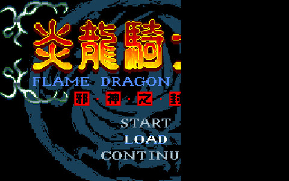
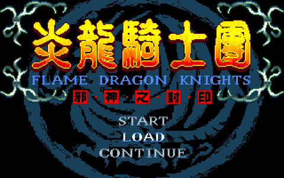

原本

Windows Registry Editor Version 5.00 [HKEY_LOCAL_MACHINE\SOFTWARE\Microsoft\DirectDraw] "EmulationOnly"=dword:00000001 [HKEY_LOCAL_MACHINE\SOFTWARE\Microsoft\Direct3D\Drivers] "SoftwareOnly"=dword:00000001 [HKEY_LOCAL_MACHINE\SOFTWARE\Wow6432Node\Microsoft\DirectDraw] "EmulationOnly"=dword:00000001 [HKEY_LOCAL_MACHINE\SOFTWARE\Wow6432Node\Microsoft\Direct3D\Drivers] "SoftwareOnly"=dword:00000001
修改後
